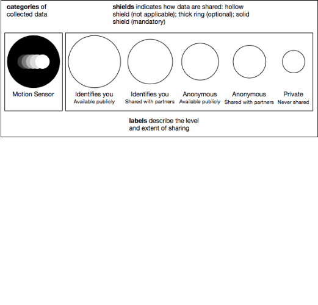
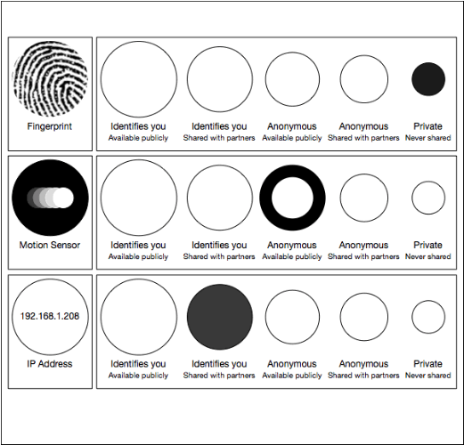
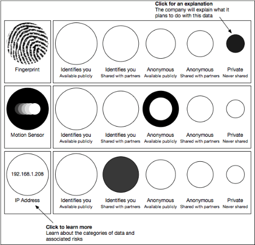

name: intro class: center, middle # Citizens Consent ## Based on work done at the Data Privacy Legal Hackathon Mozilla offices, San Francisco • May 2014 Puneet Kishor (Plazi) Released under a [CC0 Public Domain Dedication](https://creativecommons.org/publicdomain/zero/1.0/). <div class="slidefooter"> <a href="/Citizens-Consent"><img src="/_lib/img/PunkishEidesisOrg-small.gif"></a> <a rel="license" href="https://creativecommons.org/publicdomain/zero/1.0/"><img src="/_lib/img/zero.png" alt="CC0" width="30" height="30"></a> <div class="navlinks"> <a href="javascript:slideshow.gotoPreviousSlide()">prev</a> <a href="javascript:slideshow.gotoNextSlide()">next</a> </div> </div> --- layout: true <div class="slidefooter"> <a href="/Citizens-Consent"><img src="/_lib/img/PunkishEidesisOrg-small.gif"></a> <a rel="license" href="https://creativecommons.org/publicdomain/zero/1.0/"><img src="/_lib/img/zero.png" alt="CC0" width="30" height="30"></a> <div class="navlinks"> <a href="javascript:slideshow.gotoPreviousSlide()">prev</a> <a href="javascript:slideshow.gotoNextSlide()">next</a> </div> </div> --- ## Help * Notes are hidden, but may be seen by pressing **P** on your keyboard. * Press **C** to clone a show. * Press **H** for other keyboard shortcuts. ??? notes here --- ## Citizens Consent An idea for more informed citizens based on work done by * Dan Garon * Puneet Kishor * Lysle * Herrick * Beth McCarthy --- ## The Problem * Citizens give up their personal information without fully understanding what will be collected, where it will go, and how it will be used. * It is hard to understand policies around privacy, sharing and access because they are complicated, non-standard, and perhaps even intentionally obfuscating. --- ## Citizens Consent * Analogy to *Informed Consent* * Consent is not good unless the user understands the facts, implications, and consequences. * A well-understood and given consent is the right of the citizen and the responsibility of the data collector. --- ## Prior Attempts * Many attempts at standardizing privacy policies * Few have gained traction --- ## Solution * Simple, attractive, visual display of a company's data sharing policiy * Targeted at average user, and focused on data sharing * Informative instead of over-whelming * Backed by a legally-binding policy --- ## Shields of Consent  --- ## How we share data…  --- ## How we share data  --- ## Additional features * Staged decision-tree to allow web sites and apps to generate the citizens consent report * Citizen can subscribe and receive notifications when the policy changes * Auto-generate legally binding data privacy and sharing policies